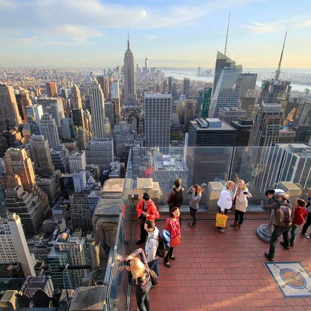
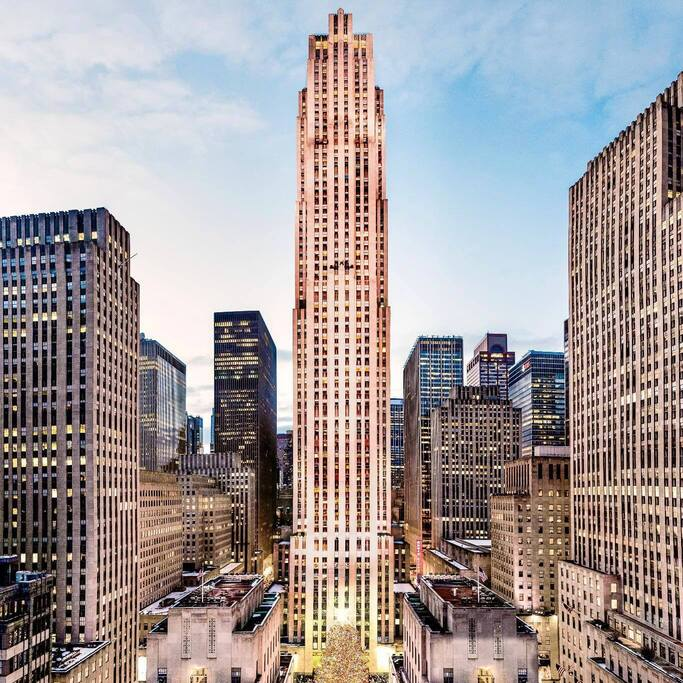
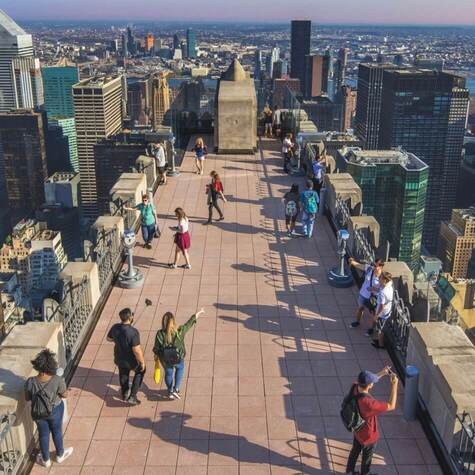
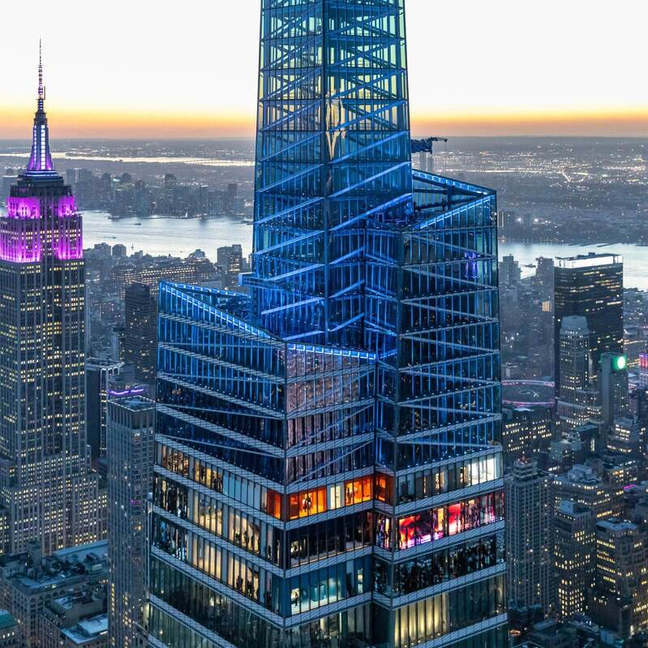
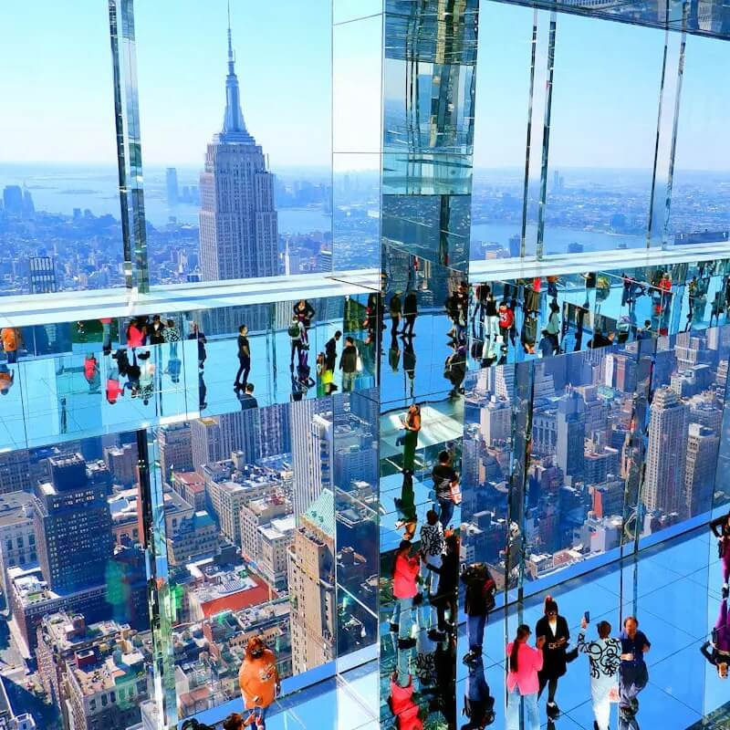
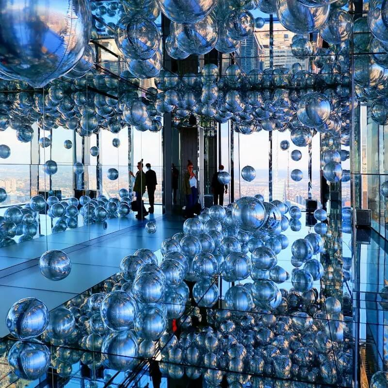
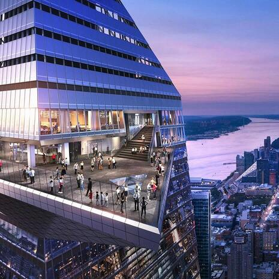
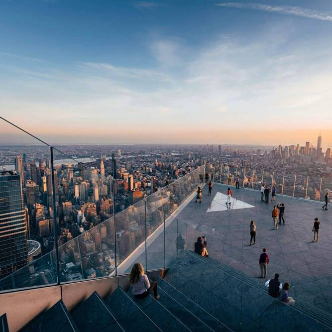
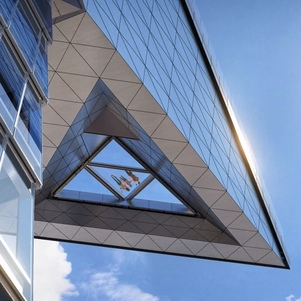

Mirador ubicado en el edificio One World Trade Center. En esta actividad el individuo se encuentra
entre los pisos 100 y 102 en tan solo cuarenta y siete segundos. Desde allí se pueden observar vistas 360 grados y
también disfrutar de la comida en el restaurante con el que cuenta el mirador.
Top Of The Rock



Ubicado en el edificio Rockefeller Center, al centro de la ciudad. Cuenta con vistas 360 grados y
una parte al descubierto para poder "sentirse en las nubes".
Summit One Vanderbilt



El Summit One Vanderbilt cuenta con varias salas para observar la vista de diferentes maneras,
podemos encontrar una de ellas con gran cantidad de espejos, otra en la que el fin es observar y jugar con
globos plateados alrededor de toda la sala, y a continuación una con pantallas, entre otras. Al
final del recorrido hay un bar, donde sentarse a descansar y tomar o comer algo mirando hacia Nueva
York.
The Edge



The Edge cuenta con vistas 360 grados. Hay un espacio al aire libre, en donde se encuentra un piso
de
vidrio para vivir la experiencia de caminar y acostarse sobre Nueva York, unas escaleras en donde sentarse a
descansar
y un bar para comer o tomar disfrutando del paisaje desde allá arriba.